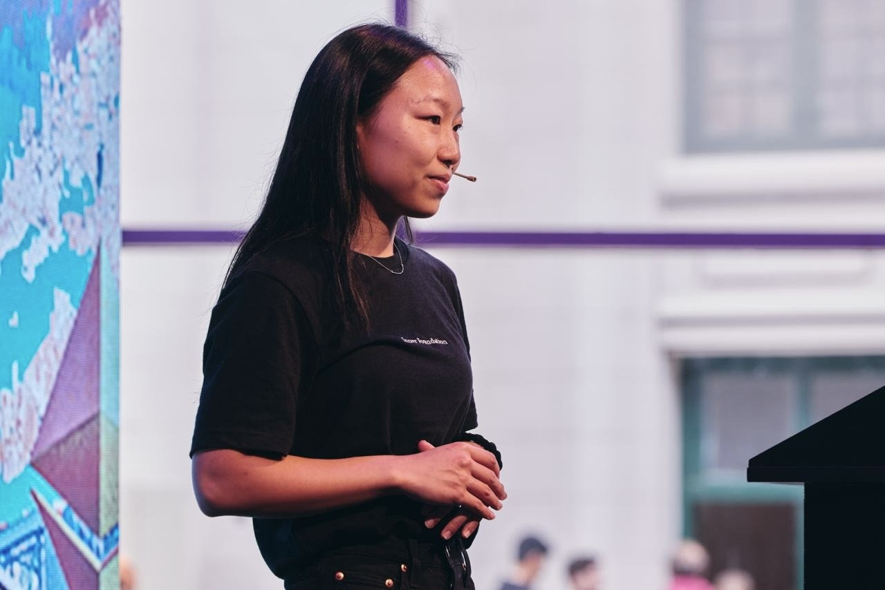

Coach, founder, operator, and occasional artist.
I'm concerned with cultivating human ideals that lead us toward a more prosperous society.
Self-taught. Based nowhere in particular.
Human development
I currently run Inner Foundation, bringing almost a decade of experience coaching founders and engineers at the frontier of technology into a focused practice. My vision is best understood reading the manifesto and my work, through their testimony.
Technological freedom
I started in tech at 18 and entered crypto at 20, joining the founding team at Aragon where I led operations. I later contributed to Status and co-founded Firm. All building toward infrastructure for sovereignty, until the work that stayed with me became the humans building it.
Arts & Poetry
I paint and write poetry under Zeng Studio, where I experiment with abstraction, texture, and the tension between order and chaos.
Talks
